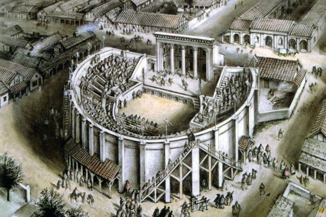

Roman Theatres (From the 4th century BC)

Roman theaters were heavely influenced by Greek theaters but it was mostly revolved aroung the drama, subplots,
characters and the play it self it was not about religion in any way.
Back in the days audiences were rude and wouldn't applaud they would be mean and act as if the play was boring
because of the way characters are presented therefore the actors developed a new method that would keep the guests
entertained and interested in the characters that method was about trying to let the audience guess the characters state
by only looking at them for example:
- A black wig means that the actor is a young male
- A red wig means the character was a slave
- A yellow robe means the character was a woman
- A yellow tassel means the character was a god
Overall it was different a bit from Greek theaters.